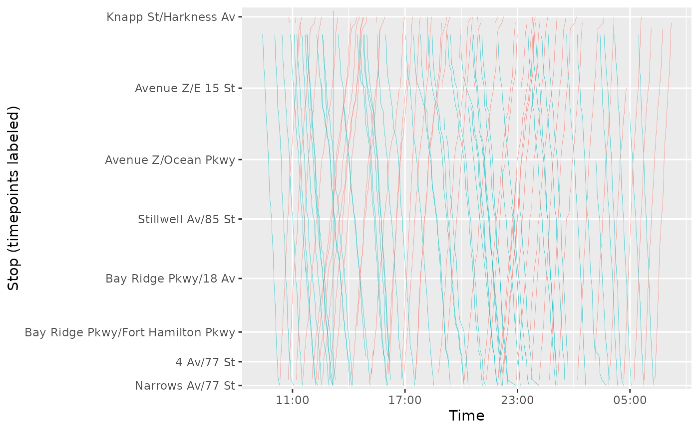

Stringline plots
stringline.Rmd
library(gtfsrealtime)
library(gtfstools)
library(data.table)
#>
#> Attaching package: 'data.table'
#> The following object is masked from 'package:base':
#>
#> %notin%
library(dplyr)
#>
#> Attaching package: 'dplyr'
#> The following objects are masked from 'package:data.table':
#>
#> between, first, last
#> The following objects are masked from 'package:stats':
#>
#> filter, lag
#> The following objects are masked from 'package:base':
#>
#> intersect, setdiff, setequal, union
library(ggplot2)
library(sf)
#> Linking to GEOS 3.12.1, GDAL 3.8.4, PROJ 9.4.0; sf_use_s2() is TRUEArchived data
A GTFS-realtime feed is a snapshot in time of a transit system. Most
often, it will be more analytically interesting to work with a group of
feeds archived over some time period. Frequent archiving can quickly
create an unwieldy number of files, so all gtfsrealtime
functions can work with a ZIP file containing multiple feeds. For
instance, the code below will read all bus positions from the New York
City MTA over the course of a day, from a ZIP file containing one feed
per minute, and converts it to a data.table for efficient
manipulation [@data.table]. This file is
too large to include with the package, but is available for download at
https://files.indicatrix.org/gtfsrealtime-r/nyc-bus-demo.zip.
The code below automatically downloads it:
if (!file.exists("nyc-bus-demo.zip")) {
download.file(
"https://files.indicatrix.org/gtfsrealtime-r/nyc-bus-demo.zip",
"nyc-bus-demo.zip"
)
}Reading the whole day of vehicle locations takes 44 seconds on an M1 Macbook Pro.
daily_positions = read_gtfsrt_positions("nyc-bus-demo.zip", "America/New_York") |>
data.table()Some of the observations are duplicates, as not every bus reports in every minute. The syntax below groups by timestamp and vehicle ID and then selects a single observation for each. At least in the New York data, there are sometimes multiple reports with the same timestamp and vehicle ID but different locations. This is a data error, so we arbitrarily pick one. After deduplication, we have 2.8 million observations.
daily_positions = daily_positions[, .SD[1], by = c("timestamp", "vehicle_id")]
nrow(daily_positions)
#> [1] 2818523Since there are multiple feeds within the ZIP file, the
file_index field will contain a numeric identifier for each
feed. Note that this is based on the order the feeds occur in the ZIP
file, it may not be chronological. There is also a
file_timestamp field identifying when the file containing
each observation was produced, but this is not guaranteed to be unique
across files.
GTFS-realtime is designed to be interoperable with static GTFS. By combining the vehicle positions with stop locations and route information from the static GTFS, we can make a stringline plot showing the progress of vehicles in each direction along the route.
First, we will download the GTFS for Brooklyn buses:
if (!file.exists("brooklyn-bus.zip")) {
download.file(
"https://files.indicatrix.org/gtfsrealtime-r/brooklyn-bus.zip",
"brooklyn-bus.zip"
)
}Then, we can read the GTFS using the gtfstools
package:
static = gtfstools::read_gtfs("brooklyn-bus.zip")Next, we will extract the stops served by the B4 bus. We will show both directions on the stringline plot, with time on one axis and stops on the other. Since the stops are not exactly the same in both directions, but we want to have a common axis, we will first find the stops for direction_id 0, and then snap the stops for direction_id 1 to the closest stop on direction_id 0.
Since buses may have multiple stopping patterns (e.g. short turns), we use the median stop sequence for each stop as a representative location along the route.
ROUTE_ID = "B4"
trips = static$trips[route_id == ROUTE_ID & direction_id == 0, trip_id]
stop_times = static$stop_times[trips, on = .(trip_id)]
fwd_stop_sequences = stop_times[, .(stop_sequence = median(stop_sequence), timepoint = first(timepoint)), by = stop_id]
fwd_stop_sequences = static$stops[fwd_stop_sequences, on = .(stop_id)]
# now, figure out the reverse direction
reverse_trips = static$trips[route_id == ROUTE_ID & direction_id == 1, trip_id]
reverse_stop_times = static$stop_times[reverse_trips, on = .(trip_id)]
reverse_stops = unique(reverse_stop_times[, .(stop_id)])
reverse_stops = static$stops[reverse_stops, on = .(stop_id)]
# spatially join the reverse stops to the forward stops to get the closest stop sequence
fwd_stop_sequences = st_as_sf(fwd_stop_sequences, coords = c("stop_lon", "stop_lat"), crs = 4326) |>
st_transform(32118)
reverse_stops = st_as_sf(reverse_stops, coords = c("stop_lon", "stop_lat"), crs = 4326) |>
st_transform(32118)
reverse_stops = st_join(reverse_stops, select(fwd_stop_sequences, stop_sequence), join = st_nearest_feature)
stop_sequences = rbind(
select(fwd_stop_sequences, stop_id, stop_sequence) |> st_drop_geometry(),
select(reverse_stops, stop_id, stop_sequence) |> st_drop_geometry()
) |>
# make sure stops that appear in both aren't duplicated
group_by(stop_id) |>
slice_head(n = 1) |>
ungroup()Next, we filter our daily positions to just the positions for the route we are working with:
route_positions = daily_positions |>
filter(route_id == ROUTE_ID)Next, we can estimate the arrival time at each stop by finding the last position report before the bus passed that stop. If a bus passed multiple stops between position reports, this will still work; there won’t be information on the times at those stops but the stringline chart will just connect the stops we do have information for with a constant-speed line.
stop_arrival_times = route_positions |>
left_join(stop_sequences, by = "stop_id") |>
left_join(select(fwd_stop_sequences, stop_sequence, stop_name), by = "stop_sequence") |>
group_by(vehicle_id, trip_id, stop_sequence) |>
slice_max(timestamp) |> # the latest time reported before passing the stop
ungroup() |>
arrange(vehicle_id, timestamp)
stop_arrival_times |>
ggplot(aes(
x = reorder(stringr::str_to_title(stop_name), stop_sequence),
y = timestamp,
group = paste(vehicle_id, trip_id),
color = factor(direction_id)
)) +
geom_path(size = 0.1) +
theme(legend.position = "none") +
xlab("Stop (timepoints labeled)") +
ylab("Time") +
scale_x_discrete(breaks = stringr::str_to_title(fwd_stop_sequences[fwd_stop_sequences$timepoint == 1, ]$stop_name)) +
coord_flip() +
scale_y_datetime(labels = \(dt) strftime(dt, "%H:%M"))
#> Warning: Using `size` aesthetic for lines was deprecated in ggplot2 3.4.0.
#> ℹ Please use `linewidth` instead.
#> This warning is displayed once per session.
#> Call `lifecycle::last_lifecycle_warnings()` to see where this warning was
#> generated.
The plot clearly shows that there was some bunching on this day around rush hour.